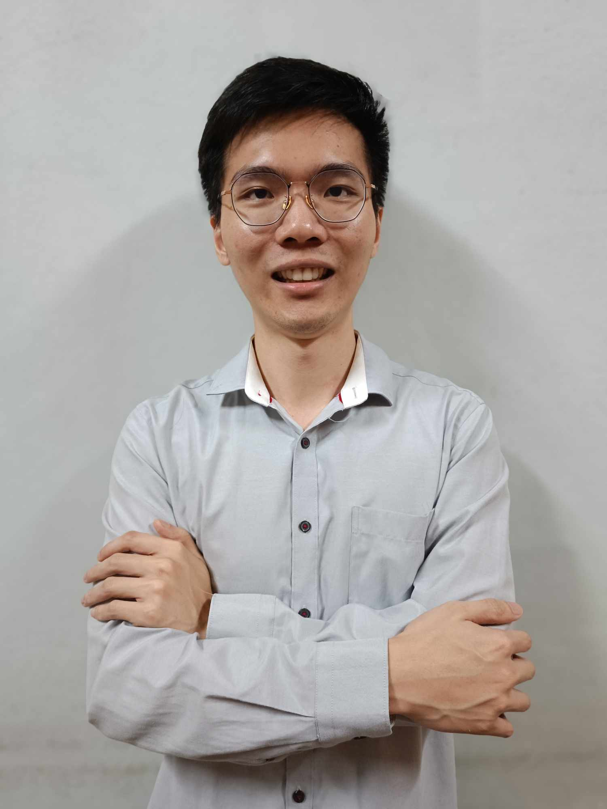

Chan Soon Lun

Summary
3 years experiences in software developer for machine. Long-life learning to find the meaning of the life and future.
Education
- Bachelor of Information Technology (Honours) in Software Systems Development - Tunku Abdul Rahman University of Management and Technology (2019-2021)
- Diploma in Science (Information Systems Engineering) - Tunku Abdul Rahman University of Management and Technology (2017-2019)
Working Experiences
-
Software developer - Sophic Automation Sdn. Bhd.
February 2022- Present
- Design PC based software for machine using C# .Net Framework as backend, WPF as UI frontend and perform database CRUD with Microsoft SQL Server or PostgreSQL.
- Onsite to provide after sales service maintenance on software solution, perform software installation.
-
Software developer internship - Sophic Automation Sdn. Bhd.
May 2021 - October 2021
- Have designed software with C# .Net Framework as backend, WPF as UI frontend and performed CRUD with database.
Skills
- C#, Java: ⭐️⭐️⭐️
- English: ⭐️⭐️⭐️
- Chinese: ⭐️⭐️⭐️⭐️
- Malay: ⭐️⭐️
- Japanese: ⭐️
Awards and Certifications
- Dean’s List for undergraduate degree (for 6 consecutive semesters)
- Completion of marathon run in Tarcian Run 2017 & 2018
Others